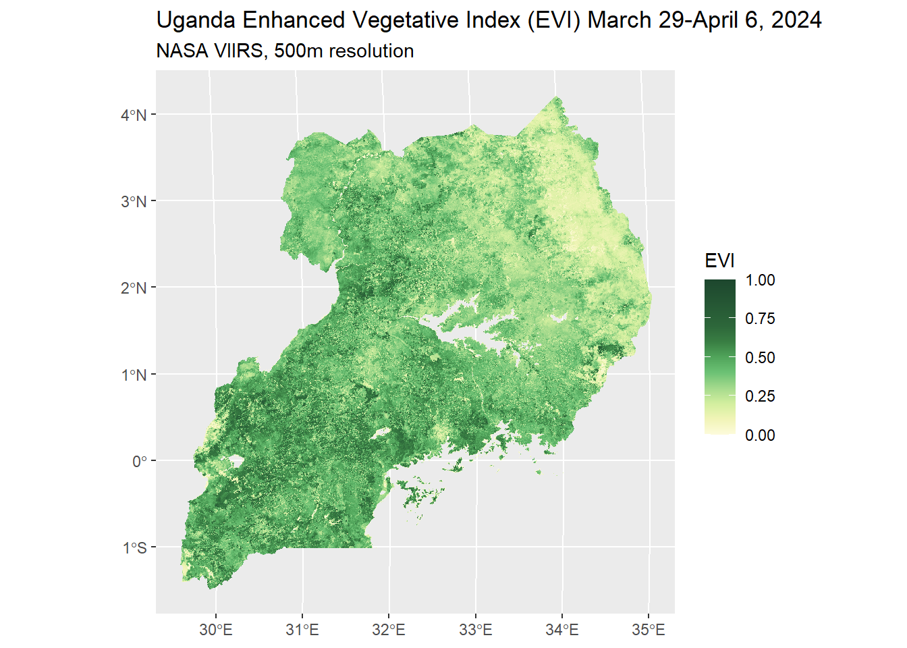

Vegetation and Land Cover Part 1: Vegetative Indices
An almost overwhelming number of vegetative and land cover data types exist. As the first post in a series of three, this blog gives a brief primer into vegetative indices and which ones might be most appropriate for different research goals.
NDVI
LAI
VCF
Agriculture
Seasonality
terra
sf
Author
Affiliation
Devon Kristiansen
IPUMS Global Health Research Manager
Published
February 6, 2026
Several previous posts on this blog (iterative workflows; NDVI aggregation methods; multilevel modeling) have featured the Normalized Difference Vegetation Index (NDVI), which is an index frequently used as a measure of vegetation greenness and health.
There are many other indices and measures to describe vegetation or land cover on Earth’s surface, however, and in this series we’ll go into details about what these data are and how they might be appropriate for certain research goals. Various data and indices represent seasonal agricultural productivity, or be used to measure droughts, deforestation, or many other climate change-related phenomena. We will start with vegetative indices, that is, measures of greenness detected using surface reflectance. The next two posts will cover measures of moisture in the environment and then land cover/land use data.
Greenness or Vegetation
First, we’ll look more closely at measures related to vegetation, in that the primary method to produce the measure or index is a calculation of the density of greenness, or photosynthetic activity, of a pixel. Below is an image we’ve created of the Enhanced Vegetation Index of Uganda in 2024 using remotely-sensed data from NASA’s VIIRS satellite, as an example of available vegetative index data. Click the word “Code” below to see the entirety of the code used to produce this image. The code below includes a workflow for adding projection metadata covered in our blog post about VIIRS vegetative index data.
Code
library(ipumsr)library(sf)library(dplyr)library(tidyr)library(zoo)library(lubridate)library(terra)library(fs)library(stringr)library(purrr)library(rhdf5)library(ggplot2)library(ggspatial)# Read in H5 files ---- h5_files <-list.files("data_local/evi", full.names =TRUE, pattern ="\\.h5$") tile_codes <-unique(str_extract(h5_files, "h[0-9]{2}v[0-9]{2}"))tiles <-map( tile_codes,function(code) h5_files[str_detect(h5_files, code)])# Read in metadata from HDF filestile_metadata <-map( tiles,function(t) h5read(t[1], name ="//HDFEOS INFORMATION/StructMetadata.0"))# Assign sinusoidal projection information from object tile_metadatasinu_proj <-"+proj=sinu +lon_0=0 +x_0=0 +y_0=0 +R=6371007.181 +units=m +no_defs"# Gather upper and lower limits for downloaded tilesul <-map( tile_metadata,~str_match(.x, "UpperLeftPointMtrs=\\((.*?)\\)")[, 2])ul <-map(str_split(ul, ","), as.numeric)lr <-map_chr( tile_metadata,~str_match(.x, "LowerRightMtrs=\\((.*?)\\)")[, 2])lr <-map(str_split(lr, ","), as.numeric)# Save coordinate extents for tilestile_ext <-map2(ul, lr, function(u, l) ext(u[1], l[1], l[2], u[2]))evi_tiles <-map2( tiles, tile_ext,function(tile, ext) {# Load raster for the input tile. We select the EVI subdataset r <-rast( tile, subds ="//HDFEOS/GRIDS/VIIRS_Grid_16Day_VI_500m/Data_Fields/500_m_16_days_EVI",noflip =TRUE )crs(r) <- sinu_proj # Attach sinusoidal projection defined aboveext(r) <- ext # Attach this tile's extent r # Return the updated raster for this tile })# Mosaic tiles togetherevi_mosaic <-reduce(evi_tiles, mosaic)# Replace EVI values of less than -1 to missingm <-matrix(c(-Inf, -1, NA), nrow =1)evi_mosaic <-classify(evi_mosaic, m)# Read in Uganda shapefiles and transform the projection to match the EVI dataug_borders <- ipumsr::read_ipums_sf("shapefiles/geo1_ug1991_2014.zip") |>st_make_valid() |># Fix minor border inconsistenciesst_union() |>st_transform(crs(evi_mosaic))ug_evi_crop <-crop(evi_mosaic, ug_borders)ug_evi_mask <-mask(ug_evi_crop, vect(ug_borders))# Create color pallete for EVI evi_pal <-list(pal =c("#fdfbdc","#f1f4b7","#d3ef9f","#a5da8d","#6cc275","#51a55b","#397e43","#2d673a","#1d472e" ),values =c(0, 0.1, 0.2, 0.3, 0.4, 0.5, 0.6, 0.7, 1))#Create plot of EVI for Ugandauganda_evi_plot <-ggplot() +layer_spatial(ug_evi_mask[[1]]) +scale_fill_gradientn(colors = evi_pal$pal,values = evi_pal$values,limits =c(0, 1),na.value ="transparent" ) +labs(title ="Uganda Enhanced Vegetative Index (EVI) March 29-April 6, 2024", subtitle ="NASA VIIRS, 500m resolution", fill ="EVI")uganda_evi_plot

The table below is not an exhaustive list. We’ve chosen a select set of indicators to highlight that are widely used and vary enough from each other to be considered for different research goals. A longer list of vegetation indices can be found on NASA’s website.
The information in the table is designed to help you navigate which indicator might be most appropriate for your research question. Your choice might be guided by the spatial resolution, temporal frequency, spatial or temporal coverage, or specific component of the measure itself.
You will notice some indicators occupy multiple rows - in the cases that the same indicator was collected by different instruments (ie. satellites) over time, their resolution or frequency might have changed as technology in remote sensing has advanced. Below the table are additional details regarding each measure and suggestions or examples for best use cases.
As we have covered previously in our introductory post on NDVI, the Normalized Difference Vegetation Index represents the amount of photosynthetic activity measured by a satellite on a pixel of Earth’s surface. Photosynthetic plants absorb red light and reflect greens, but also reflect near-infrared light extremely well which satellite sensors can capture. The reflection of near-infrared light is what NDVI leverages: NDVI is measured using the difference between the near infrared (NIR) and red (R) light reflected back to satellite sensors, normalized by the sum of the near infrared and red bands of light.
NDVI = (NIR - R) / (NIR + R )
The possible values of NDVI range from -1 to 1, with values zero and under being bare ground, water, and other surfaces that reflect large amounts of red light relative to near infrared light, that is, having very little to no plants absorbing the red light for photosynthesis.
Typical Uses
The NDVI is a widely-used measurement for vegetation health, and can be used to detect changes in vegetation cover, density, and stress over time.
Some noted weaknesses of NDVI are that it can be prone to containing outliers and spurious value changes in the data due to cloud cover, and the reflectance of different soil types may interfere with its ability to compare pixels from different regions. NDVI has been found to not perform well differentiating pixels that have a high vegetation density, such as tropical rain forest. Further, not all photosynthetic surfaces of plants are green1,2.
One option for research projects involving areas with low vegetative cover is the Soil Adjusted Vegetation Index (SAVI), which is the NDVI corrected for soil brightness. An option for areas of high vegetation density is the Enhanced Vegetation Index, described below.
Example articles
Njatang et al 2023 used NDVI, CHIRPS precipitation data, and armed conflict data to analyze climate change and conflict’s effect on child malnutrition in Sub-Saharan Africa3.
EVI
Measurement
The Enhanced Vegetation Index is similar to the NDVI, but with additional components to adjust for cloud cover and canopy background noise.
EVI = G * ((NIR - R) / (NIR + C1 * R – C2 * B + L))
EVI is calculated from the above equation from near infrared light (NIR), red light (R), blue light (B), a canopy background value for the pixel (L), coefficients for atmospheric resistance (C1, C2), and a gain factor (G - usually 2.5).
Typical Uses
The EVI might be a better choice over NDVI for an analysis focusing on areas of the world with frequent cloud cover and dense foliage (e.g. tropical rain forest) or smoke in the atmosphere (e.g. slash and burn agriculture). EVI is available through NASA starting in 2012, so it is not a viable measurement option for research questions involving a timeframe before 2012.
Example article
Davies et al 2016 found that EVI was more resilient to atmospheric interference than other vegetative indices when measuring forest changes in Cambodia4.
LAI
Measurement
The Leaf Area Index is a measurement of the green leaf density of plant canopy, or the one-sided leaf area per horizontal ground area. There are multiple approaches, but the end result is a unit-less index value greater than zero5,6. Values greater than 1 indicate multiple layers of leaves in the same area.
Leaf Area (m2) / Ground Area (m2)
Integral of leaf area over the canopy height (m3/m3)
One-sided green broadleaf area per unit of ground area (m2/m2); one-half of the total conifer needle surface area per unit of ground area
Typical Uses
The LAI is a reasonable choice to represent a variety of biological processes and activity of plant matter in an area, such as photosynthetic production, rainfall interception, or evapotranspiration7. For example, leaf area may be more important in measuring shade given by a canopy to moderate sunlight and heat.
Example article
Bangelesa et al 2023 found an association between LAI and stunting in children under 5 in the Democratic Republic of the Congo7.
VCF
Measurement
The Vegetation Continuous Fields data are produced by NASA to describe the composition of land cover within each pixel, divided into tree cover, non-tree vegetative cover, and non-vegetative cover, such that the sum of the three components is 100 percent.
The data are produced, like the other vegetative indices, using surface reflectance (or light captured by satellite reflected off Earth’s surface), but also combined with training data to create the model for predicting global land coverage in the three categories.
Typical Uses
The VCF data may be useful for research projects if the outcome may be correlated differently between tree and non-tree vegetative cover, which is difficult to determine using NDVI. VCF may be more useful than land cover data if the density of forest cover relative to non-tree vegetative cover is meaningful.
Because the VCF data are an annual-based measure, VCF might not be well suited to study change within the year, or specific deforestation events with a narrow time scale. For example, VCF would not be suited to measuring the loss of vegetative cover immediately after a fire, as some amount of vegetation would grow back over a period of months until the next measurement occurs.
Example article
Johnson et al 2013 used VCF data to demonstrate a linkage between percent forest cover and reduced risk of diarrhea in young children, and that children living in areas with deforestation in the past 10 years were less likely to consume foods rich in vitamin A or meet dietary diversity guidelines8.
Honorable Mentions
The Normalized Difference Fraction Index has been demonstrated as a very accurate measure of deforestation and forest degradation, but it is not available at a global scale for download. Instead, one would need to download the component pieces of surface reflectance data and compute NDFI for the area of focus2,9.
Looking ahead
The next post will feature measures of environmental moisture, which are helpful for identifying drought (or flooding) and plant stress due to a lack of water.
References
1. Huete, A., Didan, K., Miura, T., Rodriguez, E. P., Gao, X., & Ferreira, L. G. (2002). Overview of the radiometric and biophysical performance of the MODIS vegetation indices. Remote Sensing of Environment, 83(1), 195–213. https://doi.org/10.1016/S0034-4257(02)00096-2
2. Schultz, M., Clevers, J. G. P. W., Carter, S., Verbesselt, J., Avitabile, V., Quang, H. V., & Herold, M. (2016). Performance of vegetation indices from Landsat time series in deforestation monitoring. International Journal of Applied Earth Observation and Geoinformation, 52, 318–327. https://doi.org/10.1016/j.jag.2016.06.020
3. Njatang, D. K., Djourdebbé, F. B., & Wadou, N. D. A. (2023). Climate variability, armed conflicts and child malnutrition in sub-saharan Africa: A spatial analysis in Ethiopia, Kenya and Nigeria. Heliyon, 9(11). https://doi.org/10.1016/j.heliyon.2023.e21672
4. Davies, K. P., Murphy, R. J., & Bruce, E. (2016). Detecting historical changes to vegetation in a Cambodian protected area using the LandsatTM and ETM+ sensors. Remote Sensing of Environment, 187, 332–344. https://doi.org/10.1016/j.rse.2016.10.027
5. Weiss, M., Baret, F., Smith, G. J., Jonckheere, I., & Coppin, P. (2004). Review of methods for in situ leaf area index (LAI) determination: PartII. Estimation of LAI, errors and sampling. Agricultural and Forest Meteorology, 121(1), 37–53. https://doi.org/10.1016/j.agrformet.2003.08.001
6. Fang, H., Baret, F., Plummer, S., & Schaepman-Strub, G. (2019). An Overview of GlobalLeafAreaIndex (LAI): Methods, Products, Validation, and Applications. Reviews of Geophysics, 57(3), 739–799. https://doi.org/10.1029/2018RG000608
7. Bangelesa, F., Hatløy, A., Mbunga, B. K., Mutombo, P. B., Matina, M. K., Akilimali, P. Z., Paeth, H., & Mapatano, M. A. (2023). Is stunting in children under five associated with the state of vegetation in the DemocraticRepublic of the Congo? Secondary analysis of DemographicHealthSurvey data and the satellite-derived leaf area index. Heliyon, 9(2). https://doi.org/10.1016/j.heliyon.2023.e13453
8. Johnson, K. B., Jacob, A., & Brown, M. E. (2013). Forest cover associated with improved child health and nutrition: Evidence from the MalawiDemographic and HealthSurvey and satellite data. Global Health: Science and Practice, 1(2), 237–248. https://doi.org/10.9745/GHSP-D-13-00055
9. Souza, C., Tenneson, K., Dilger, J., Wespestad, C., & Bullock, E. (2024). Forest Degradation and Deforestation. In J. A. Cardille, M. A. Crowley, D. Saah, & N. E. Clinton (Eds.), Cloud-BasedRemoteSensing with GoogleEarthEngine: Fundamentals and Applications (pp. 1061–1091). Springer International Publishing. https://doi.org/10.1007/978-3-031-26588-4_49